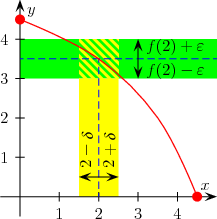
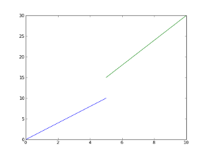
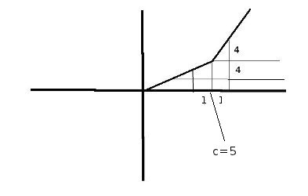
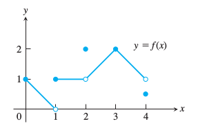
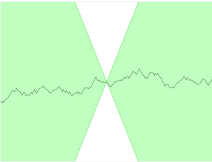
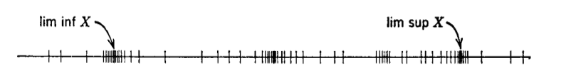
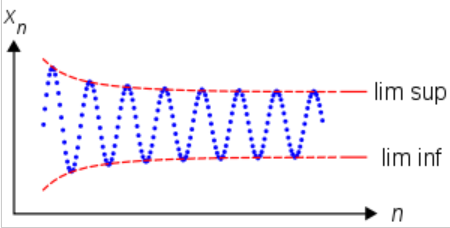

Ders 2
Süreklilik
Tanım
$S \subset \mathbb{R}$, $f: S \to \mathbb{R}$ bir fonksiyon olsun, ve $c \in S$ bir sayı olsun. "$f$'in $c$'de sürekli olduğu" söylenir, şu durumda: Eğer her $\epsilon>0$ için bir $\delta > 0$ var ise, öyle ki ne zaman $x \in S$ ve $|x-c| < \delta$ işe, o zaman $|f(x) - f(c)| < \epsilon$ doğrudur.
Eğer $f: S \to \mathbb{R}$ her $c \in S$ için doğru ise, yani bir $c$ noktası değil tüm $c$'ler için geçerli ise, o zaman $f$'in sürekli olduğunu söyleriz. Yani nokta belirtmeye ihtiyaç kalmaz.
Üstteki tanım Analizde doğru anlaşılması gereken en önemli teorilerden biridir, ve tam anlaması pek kolay olmayabilir. Dikkat edilirse $\delta$, hem $\epsilon$'a hem de $c$'ye bağlı. Yani her $c \in S$ için aynı $\delta$ seçilmiyor.
Ayrıca sürekli fonksiyonların tanımının limitlerin tanımına benziyor olması raslantı değil, sürekli fonksiyonların önemli bir özelliği zaten onların düzgün limitleri olmaları.

Tanımın işlemesinde mutlak değer (absolute value, $||$ işareti) kritik bir rol oynuyor. Grafiksel olarak şöyle gösterebiliriz. Bir fonksiyonun değerleri etrafında, yukarı, aşağı olmak üzere $\epsilon$ kadar bir pencere tanımlıyoruz (yeşil olarak görülen bölüm). Şimdi örnekte $c=2$ etrafında, yani $x$ bazında öyle bir başka pencere tanımlayalım ki, bu penceredeki değerler tamamen yeşil kısıma tekabül eden değerlerin içinde kalsın. Bu şekilde tek bir pencere bulabildiğimiz anda iş tamamdır. Ve bunu tüm $\epsilon > 0$ için yapabiliyorsak, o fonksiyon sürekli demektir.

Diğer yandan üstteki grafikte gösterilen
$$ f(x) = \left\{ \begin{array}{ll} x < 5 & 2x \\ x \ge 5 & 3x \end{array} \right. $$
fonksiyonu sürekli değildir. Eğer $c=5$ etrafında $\epsilon = 4$ alırsak mesela, bu pencereye tekabül eden bir $\delta$ bulamayız. Fakat şu fonksiyon süreklidir.

$$ f(x) = \left\{ \begin{array}{ll} x < 5 & 2x \\ x \ge 5 & 3x + 10 \end{array} \right. $$
Fonksiyonun pürüzsüz (smooth) olmadığına dikkat, yani iki parçalı bir fonksiyon, kesikli bir şekilde tanımlı, ama yine de sürekli.
Süreklilik için limitlere dayalı bir tanım daha açıklayıcı olabilir [1, sf. 125]. Bir iç nokta (interior point) $c$ için, $y=f(x)$ o noktada sürekli denir eğer
$$ \lim_{x \to c} = f(c)$$
ise. Yani bir noktadaki fonksiyon limiti eğer fonksiyonun o noktadaki değerine eşit ise fonksiyon o noktada süreklidir.

Mesela üstteki parçalı fonksiyonda $x=3$ noktasında süreklilik vardır (her ne kadar kırılış varsa bile), çünkü o noktada
$$ \lim_{x \to 3} f(x) = f(3) $$
Eşit Süreklilik (Uniform Continuity)
Süreklilik tanımında $\delta$'nin $c$ noktasına bağlı olduğunu söylemiştik. Ama bazı durumlarda $\delta$'nin bağımsız olması daha faydalıdır.
Tanım
$S \subset \mathbb{R}$, $f:S \to \mathbb{R}$ bir fonksiyon olsun. Farz edelim ki her $\epsilon > 0$ için bir $\delta > 0$ mevcut, ki $x,c \in S$ ve $|x-c| < \delta$ olduğu zaman, $|f(x) - f(c)| < \epsilon$. Bu durumlarda fonksiyona eşit sürekli denir.
Eşit Sürekli bir fonksiyonun (normal) sürekli bir fonksiyon olacağını görmek zor olmaz. Buradaki tek fark her seçilen $\epsilon > 0$ için öyle bir $\delta > 0$ seçiyoruz ki bu $\delta$ her $c \in S$ için ise yarıyor. Yani bu yeni tanıma göre artık $\delta$, $c$'ye bağlı değil, sadece $\epsilon$'a bağlı. Tanımın yapıldığı arka plan, bölge (domain) bir fark yaratacak. Daha büyük bir kümede eşit sürekli olmayan bir fonksiyon, daha ufak bir küme içinde eşit sürekli haline gelebilecek.
Lipschitz Sürekliliği
Tanım
$f:S \to \mathbb{R}$ bir fonksiyon olsun, öyle ki $S$ içindeki her $x,y$ için bir $K$ sayısı mevcut, ve tüm bunlarla alttaki eşitsizlik doğru
$$ |f(x) - f(y)| \le K|x-y| $$
O zaman $f$'e Lipschitz Sürekli adı verilir.
Çok geniş bir fonksiyon kategorisi Lipschitz süreklidir.
Aslında Lipschitz fonksiyonları fonksiyonun türevi için bir üst limit tanımlar, eğer üstteki ifadeyi şu şekilde yazarsak,
$$ \left|\frac{f(x) - f(y)}{|x-y|} \right| \le K $$
her $x,y$ için üstteki hesabın daha az olacağı bir $K$ vardır diyoruz ve bu $K$ fonksiyonun her noktasında türevi için bir üst sınır olacaktır. Alttaki gibi bir resim üzerinde anlatırsak,

söylediğimiz fonksiyonun hep beyaz koni dışında kalacağının garantisidir. O koni dışında kalmak ta dolaylı olarak eğimin çok aşırı büyük olmaması anlamına geliyor. Yani demek istiyoruz ki bu fonksiyon "patlamayacak". Örnek olarak $\sin(x^2)$, ya da $\sin(1/x)$ Lipschitz değildir. Pek çok polinom, "normal" fonksiyon Lipschitz'dir. İlla türevin mevcut olması bile gerekmez, mesela $f(x) = |x|$'in her noktada türevi yoktur ama Lipschitz'dir/
Fakat dikkat edelim, aynen eşit süreklilikte olduğu gibi Lipschitz sürekliliğinde de fonksiyonun tanımlandığı bölge (domain) çok önemlidir. Şimdi "sürekli" kelimesini kullanmamızın doğruluğunu kontrol edelim.
Teori
Her Lipschitz sürekli fonksiyon, aynı zamanda eşit sürekli bir fonksiyondur.
İspat
$f: S \to \mathbb{R}$ olduğunu kabul edelim, ve öyle bir $K$ sayısı olsun ki $S$ içindeki her $x$ ve $y$ için $f(x) - f(y)| \le K|x-y|$. Bu Lipschitz süreklilik tanımının bir tekrarı. Bir $\epsilon > 0$ seçelim. Sonra $\delta = \epsilon / K$ alalım. $|x-y| < \delta$ olacak şekilde her $x,y \in S$ için
$$ |f(x) - f(y)| \le K|x-y| < K\delta = K \frac{ \epsilon}{K} = \epsilon $$
Birinci eşitsizlik Lipschitz tanımından geliyor. Bu eşitsizliğin sağ tarafında diğer bildiklerimizi yerine koyunca, $\epsilon$ elde ediyoruz.
Tamlık (Completeness)
Tanım
Bir metrik uzayı $(X,d)$ tamdır (complete) eğer $X$ alanındaki her Cauchy serisi (o da $X$ içinde olan) bir öğeye yaklaşıyor ise.
Üstteki tanımı önceki dersteki Cauchy tanımı ile birleştirirsek, $\mathbb{R}$ uzayının "tam" olduğunu görebiliriz. Çünkü her Cauchy dizisinin $\mathbb{R}$'de yakınlaştığını biliyoruz, ayrıca bir bir reel sayıya yaklaşıldığını biliyoruz. Bu reel sayı $L$'in kendisi de zaten $\mathbb{R}$ içinde olduğuna göre, $\mathbb{R}$ uzayı tamdır.
Inf ve Sup
Sup
Eğer $S$ kümesi "yukarıdan sınırlanmış (bounded from above)" ise o zaman $x \in S$ için öyle bir $y$ var demektir ki her $x$ için $x \le y$ olsun. Yani $S$ içindeki her değer bu $y$ değerinden küçük olsun. Bu $x$ değerine $S$'in supremum'u da deniyor, ve $\sup\limits_{x \in S}(x)$ ya da $sup{x:x \in S}$ olarak gösterilebiliyor.
Inf
Benzer şekilde kümenin en alt sınırı, yani infimum değeri $\inf\limits_{x \in S}(x)$ ya da $inf{x:x \in S}$ olarak gösteriliyor.
Eğer elimizde bir seri (sequence) var ise o zaman şartları biraz daha gevşetmek iyidir, burada limit superior kavramı devreye girer. Inf ve sup değerleri altı / üstü değer olamaz, ama limit superior öyle bir sayıdır ki onun sonrasında sonlu (finite) / belli sayıda küme öğesi olmasına izin verilir. Limit superior aslında bir serinin yakınsadığı (converge) değerden başkası değildir.
Bu kavramların minimum ve maksimum kavramlarından farkı ne? Inf ve sup bir küme dışında da olabilirler. Bir kümenin minimal değeri muhakkak o küme içinde olmalı ama öyle kümeler vardır ki minimal ya da maksimal değeri yoktur. Mesela $\mathbb{R}+$ yani sıfır hariç tüm pozitif reel sayıları düşünelim: minimumu nedir? Hangi "çok küçük" değeri alırsak alalım, o değeri iki ile bölerek daha küçük bir değer elde edebilirim, yani minimum yoktur. Fakat bu kümenin bir infimumu vardır, sıfır değeri. Sıfır bu küme içinde değildir ama kümeyi sınırlayan bir değerdir.
Benzer örnek ters yönden supremum için de geçerli.


Formel olarak diyelim ki ${x_n}$ bir seri, ve diyelim ki bir reel sayı $S$ var, ki bu reel sayı şu şartları tatmin ediyor 1) Her $\epsilon > 0$ için bir $N$ var, öyle ki her $n>N$ için $x_n < S + \epsilon$ ve 2) her $\epsilon > 0$ ve $M>0$ için bir $n>M$ var ki $x_n > S - \epsilon$. O zaman $S$ sayısına ${x_n}$ serisinin limit superior'u denir.
Bu tanımın söylemeye çalıştığı serinin yaklaştığı değerden sonra ve önce sonlu büyüklükte bir pencere tanımlarsak bu pencere içinde sonlu sayıda eleman olacaktır (sonsuz değil). Bu pencerenin tanımlanabiliyor olması, onun makul bir noktada olmasını gerektirir, ki bu nokta da yaklaşılan değerden başkası değildir.
Limit inferior bunun tersidir,
$$ \lim \inf x_n = -\lim \sup(-x_n)$$
Vektör Uzayları
Her vektör uzayıyla ilintili olan bir tek sayı / skalar (scalar) kümesi vardır, ve bu büyüklükler ile o uzayda çarpım işlemi tanımlanır. Soyut bağlamda çalışılanlar için bu büyüklüklerin cebirsel bir alan (algebraiç field -bir soyut matematik kavramı-) üyesi olması yeterlidir. Fakat bu notlarda kullanacağımız büyüklükler ya reel sayılar, ya da kompleks sayılar olacak. Bu iki olasılık arasında hangisini kullandığımızı belli etmek için vektör uzayına "reel vektör uzayı" ya da "kompleks vektörü uzayı" diyebiliriz. Odağımız ise çoğunlukla reel vektör uzayları olacak, kompleks olanları nadir kullanacağız. Yani eğer uzayın şekli söylenmemişse, onun reel olduğunu farz edin.
Tanım
Vektör uzayı $X$, "vektör" denen öğeleri içeren bir küme, artı iki operasyondan oluşur. İlk operasyon toplama, diğeri çarpmadır. Toplama işlemi iki vektör $x,y \in X$'i bir diğer vektör $x+y \in X$ ile bağdaştırır. Çarpma işlemi $x \in X$ ve herhangi bir sayı, skalar $\alpha$ ile vektör $\alpha x$'i bağdaştırır.
$\theta$ sıfır vektörüdür.
$$ 0 \ x = \theta, \ 1 \ x = x $$
[diğer önşartlar atlandı, sırabağımsızlık (commutative) kuralı, vs, toplam 7 tane]
Örnek
Herhalde vektör uzaylarına verilecek en basit örnek reel sayılar kümesidir. Bu durumda küme elemanları olan "vektörler" tek boyutludur. Vektörü uzayı (doğal olarak) bir reel vektör uzayıdır, toplama, çarpma reel sayıların üzerinden tanımlıdır. Sıfır vektörü $\theta$, sıfır sayısıdır. Bu uzaya reel kordinat uzayı, ya da basit ifadeyle "reel çizgi (real line)" adı da verilebilir, $R^1$, ya da $R$ olarak gösterilir.
Kaynaklar
[1] Thomas, Thomas' Calculus, 11th Edition
[2] Wikipedia, Lipschitz continuity https://en.wikipedia.org/wiki/Lipschitz_continuity
Yukarı